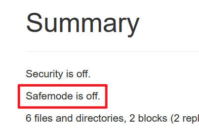

实验 4 - 熟悉常用的 HBase 操作¶
概述¶
本次实验中，我们需要搭建起 HBase 集群并在其基础上执行一些基础操作。
本实验需要实验 1 的基础，如果你还未完成，请先完成实验 1.
实验 1、4 是密切相关的
很遗憾，Apache 至今没有一个良好的兼容性模型，导致 HBase 和 Hadoop 版本是强相关的。如果你的 Hadoop 环境搭建并不是跟随“实验 1”中所述完成的，你很有可能不适合本篇教程。
It's rock time, 开始吧！
安装 HBase¶
前言¶
Slow down!
在跟随本教程时，请务必仔细阅读每一个细节。安装 HBase 的步骤可能会相当复杂，出错点较多。本教程非线性，将出现选择和根据情况跳跃阅读的情况，请勿直接复制粘贴所有命令。
这也许是本次实验中最简单也最困难的部分——如果你是根据本教程完成的实验 1，则不用担心，编者已经帮你踩过坑了；如果不是，则你有可能遇到问题。
请根据你的实际情况，选择下列安装方法中的一个：
- 我根据本教程，安装了 Hadoop 3.3.6：使用预编译的二进制包
- 我安装的不是 Hadoop 3.3.6：自行编译 HBase
- 我想自己编译 HBase：自行编译 HBase
- 我安装了 Hadoop 3.3.6，但我是 M1 或者其它 ARM/AArch64 架构系统：自行编译 HBase 或者使用预编译的二进制包1
使用预编译的二进制包¶
下载¶
如果你已经跟随本教程安装了 Hadoop 3.3.6，只需要在这里下载预编译好的 HBase 即可。
如果你是 ARMv8/AArch64 系统，可以尝试编者在 AArch64 环境下编译的 HBase 2.5.7：在这里。
- HBase 版本：2.5.7
- 目标 Hadoop 版本：3.3.6
- Java 版本：OpenJDK (HotSpot VM) 1.8.0, amd64/aarch64
安装¶
注意用户
现在，我们正在执行系统维护操作（软件安装），我们会使用 super 用户（或者其它具有 sudo 权限的管理员用户）。请确保你正在使用此类用户执行操作，再继续。
先将 HBase 二进制包（hbase-2.5.7-bin.tar.gz）传输至虚拟机。具体步骤可以参考实验 1.
依然，登录到虚拟机，你可以使用 SSH 远程连接，或者直接在虚拟机内登录操作。
以下步骤需要在集群内所有机器上均运行一遍。
- 创建 HBase 安装目录：
- 将 HBase 压缩包移动至目的地：
- 前往 HBase 安装目录：
- 解压缩：
- 调整位置2：
- 移除目录：
- 移除压缩包：
- 修正权限2：
- 修改
profile： - 添加以下内容：
- 按下 Ctrl+X，确认保存（按 Y），确认文件名（Enter）
- 应用变更：
- 以
hadoop用户身份，修改hbase-env.sh:
别忘了你有三台机哦
在 Hadoop 搭建中，我们搭建起来的是一个集群，所以……很不幸，你需要在所有机器上执行一遍这些操作。
大功告成！现在，你可以直接前往配置部分了。
自行编译 HBase¶
如果你是想挑战自己，或者是想尝试一下自己编译而来的，欢迎！而如果你是因为环境不允许而被迫使用此方法的，那么 我在此向你致以慰问 也没关系！接下来，我们开始吧。
使用最新版本
撰写时，HBase 2.5.7 为最新版本，如果发生变化，你可能需要对应调整 URL 和文件名来完成编译。
- 以
super身份安装maven： - 切换到
hadoop用户： - 开辟编译用工作空间：
- 获得 HBase 2.5.7 源代码：
- 解压缩：
- 执行编译：
- 等待：HBase 作为大型项目，编译非常耗时，同时需要从 Maven Central 下载依赖，你可以去喝杯咖啡（
三点半力饮茶先啦）、上个厕所或者洗个澡，大约需要 30 分钟时间
注意 Hadoop 版本
如果你是搭配实验 1 的现有环境，或者是已经搭建好了 Hadoop 3.3.6，那没关系，可以无视这个提示。但如果你使用的是其他版本的 Hadoop，请注意上方 -Dhadoop-three.version=3.3.6
这个参数。如果你使用的是，比如，Hadoop 3.1.3，请使用 -Dhadoop-three.version=3.1.3. HBase 2.5.7 和部分 Hadoop 版本是不兼容的，你可以在这里 检查。
编译完成后的 tar 包的位置在：
结束了？是的。我们现在获得了可以直接用来部署的 HBase. 遵循这里的步骤即可，但你不需要把 tar 文件传输到虚拟机了——它已经在虚拟机上了。
看起来也没多难？
这样看起来的话，确实是难度不高，最难的其实主要是找到正确的步骤……所以，again，80% 的工作，咱都给你省下了 ;)
配置 HBase¶
注意用户
现在，我们正在执行软件配置操作，我们会使用 hadoop 用户完成。
可以使用以下命令确认 HBase 安装完成：
输出应该类似：
SLF4J: Class path contains multiple SLF4J bindings. /* (1)! */
SLF4J: Found binding in [jar:file:/usr/local/hadoop/share/hadoop/common/lib/slf4j-reload4j-1.7.36.jar!/org/slf4j/impl/StaticLoggerBinder.class]
SLF4J: Found binding in [jar:file:/usr/local/hbase/lib/client-facing-thirdparty/log4j-slf4j-impl-2.17.2.jar!/org/slf4j/impl/StaticLoggerBinder.class]
SLF4J: See http://www.slf4j.org/codes.html#multiple_bindings for an explanation.
SLF4J: Actual binding is of type [org.slf4j.impl.Reload4jLoggerFactory]
HBase 2.5.7
Source code repository file:///never/gonna/give/you/up/hbase-2.5.7 revision=Unknown
Compiled by another-dimension on Mon Oct 31 19:38:33 HKT 2022
From source with checksum 9d1825cadbe030982fea8866bace7c1fbaa5e3822ffb2d4bbcf2cf61b01d29c109ca42a5c4395e6f3e18df3760cce194f37388a87406d875850fc699a319d940
- SLF4J 多重后端，可以无视这个报错
在完成了 HBase 的安装以后，接下来的任务就比较轻松了。我们来配置 HBase，仍然是需要在集群上所有机器上完成：
- 进入 HBase 配置目录：
- 将 Hadoop 的配置文件以符号链接形式复制过来：
- 修改
regionservers:- 如果本来就有一行
localhost，删掉它 - 填入集群内所有服务器：
- 如果本来就有一行
- 修改
hbase-site.xml:nano hbase-site.xmlhbase-site.xml<?xml version="1.0"?> <?xml-stylesheet type="text/xsl" href="configuration.xsl"?> <configuration> <property> <name>hbase.rootdir</name> <value>hdfs://namenode:8020/hbase</value> </property> <property> <name>hbase.cluster.distributed</name> <value>true</value> </property> <property> <name>hbase.master</name> <value>namenode:16000</value> </property> <property> <name>hbase.master.info.port</name> <value>16010</value> </property> <property> <name>hbase.zookeeper.quorum</name> <value>namenode,datanode1,datanode2</value> </property> <property> <name>hbase.unsafe.stream.capability.enforce</name> <value>false</value> </property> </configuration>
想偷懒？
上方 HBase 安装时，我们确实需要在每一台机器上都执行一遍那些操作。但这次，在一台机器上（比如 namenode）完成配置后，只需要使用 scp 将配置文件复制到别的机器即可4：
但是！scp 在处理符号链接时，会直接将文件内容复制到目标……所以，这个懒就只能偷到这为止了，你需要去另外两台机器，以 hadoop 用户身份，各自执行这几个命令：
运行¶
终于完成了！我们来运行 HBase 试一下：
- 启动 Hadoop HDFS:
- 启动 Hadoop YARN:
注意机器！
像之前的实验一样，你需要在 datanode1 启动 YARN.
- 等待 30 秒，待 Hadoop 安全模式停用
 - 在
namenode启动 HBase:
{kind=link}
现在你可以尝试访问 HBase 面板 查看 HBase 状态了。
根据情况，你可能需要使用 http://[虚拟机 IP]:16010.
为什么要等 30 秒？
Hadoop 集群在启动后会进入“安全模式”，此时的集群处于只读状态（不可写），保证集群启动完毕以后，Hadoop 安全模式将自动关闭。HBase 需要能够直接向 HDFS 写入数据才能正常运行，因此需要等待 Hadoop 安全模式关闭。
如果你的 HBase 面板显示如下，则说明启动正常。
{kind=link}
使用 HBase Shell¶
注意用户
现在，我们正在执行 HBase 操作，我们会使用 hadoop 用户完成。
- 进入 HBase 客户端命令行：
- 建表5：
- 列表：
- 填入数据：
- 显示表数据：
- 删除数据：
- 继续建表，添加数据，再来 drop 掉：
使用 Java API¶
不要直接运行！
在下载源码后，请修改 src/main/resources 文件夹内的 hbase-site.xml，将 Quorum 设置为正确的 IP.
运行机 hosts 要求
在运行 Java 应用的机器上，需要设置 hosts 使 namenode, datanode1, datanode2 可以被解析。
-
C:\Windows\System32\drivers\etc\hosts -
/etc/hosts
如果你有自己架设的 DNS 服务器，也可以在 DNS 服务器上设置这些记录。
类似实验 3，你需要：下载示例源码。再修改完成其中设置的填空代码。
具体要求，请查看项目中的 README 文件。
更新日志 / Changelog¶
- 2023/04/03
- 调整了 HBase 配置的顺序
- 2023/03/28
- 修正了一部分格式，与其他实验保持一致
碎碎念¶
这一块是编者的碎碎念，可以不看。
Apache 的“排外”¶
Apache 系软件陷入了一种“专业人士的陷阱”：里面的人认为不需要教程/指导（如同证明题的“显然”、“易得”），外面的人因为没有基础而难以加入。虽然 Apache 是“专业软件”，并不需要好看的皮囊作为包装，但仍然，简陋的界面设计和不人性化的阅读体验，仍然让初学者望而却步，难以上手。
HBase 文档的混乱¶
仅仅是编译 HBase，编者就找到了至少两份官方文档：
- https://hbase.apache.org/book.html#build
- https://svn.apache.org/repos/asf/hbase/hbase.apache.org/trunk/0.94/developer.html#build.tgz
但其实，没有一个版本是可以成功得到 tar 包的。我们使用的是 mvn clean install -DskipTests -Dhadoop.profile=3.0 -Dhadoop-three.version=3.3.6 assembly:single.
然后呢？即使 HBase 官方表明 HBase 2.5.x 具有 Hadoop 3.3.2+ 的完整支持，但直接从 HBase 官方下载的预编译包，在 Hadoop 3.x 发布如此长时间（2017-12-08，距撰稿时近 5 年）后，仍然是针对 Hadoop 2.8.5 编译的，无法配合 API 具有巨大变化的 Hadoop 3.3.6 使用。因此才有了需要手动编译针对 Hadoop 3.3.6 的 HBase 这一出闹剧。
Hadoop 生态糟糕的耦合性¶
如上方所述，Hadoop 和 HBase 的强版本依赖会严重妨碍二者的共同运行。个人认为这并不是一个好的设计。而 HBase 在 Hadoop 官方完成 2.x 至 3.x 的升级后，未明确注明 HBase 预编译二进制仍然是针对 Hadoop 2.x 编译的，且未提供针对 Hadoop 3.x 的预编译版本，极易导致用户失误。
-
理论上 Java 是不在意系统架构的，这也是 Java 的优点之一。所以你也可以尝试在 ARM 系统上使用现成的 HBase 包。但编者因为暂无可供测试的 ARM 设备，无法验证是否可行 ↩
-
这是 x86-64 Ubuntu 的
openjdk-8-jdk包安装的目标位置，如果你使用的是其它发行版、处理器架构或包（比如 Arch Linux 的jdk8-openjdk包在/usr/lib/jvm/java-8-openjdk），请使用ls /usr/lib/jvm确认正确的$JAVA_HOME位置 ↩ -
由于 CVE-2018-20685 ，
scp不再支持使用.作为目录名，可参见这个 GitHub Issue ↩ -
HBase 建表时要求至少有一个列族 ↩